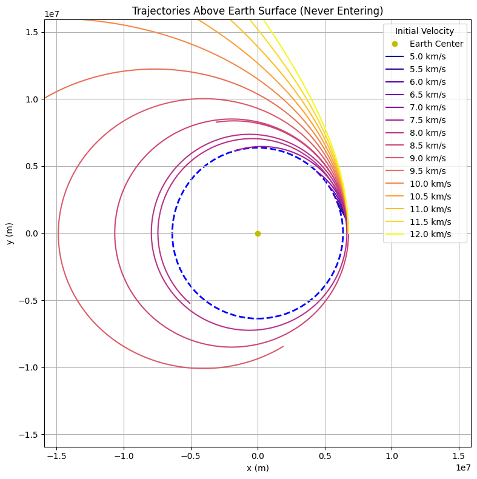

Problem 3
Trajectories of a Freely Released Payload Near Earth
Motivation
When an object is released from a moving rocket near Earth, its trajectory depends on initial conditions and gravitational forces. This scenario presents a rich problem, blending principles of orbital mechanics and numerical methods. Understanding the potential trajectories is vital for space missions, such as deploying payloads or returning objects to Earth.
Types of Trajectories
The possible trajectories of a payload are determined by its velocity relative to Earth: 1. Elliptical Orbit (Bound Trajectory): If the payload's velocity is below escape velocity but high enough to avoid reentry, it will enter an elliptical orbit. 2. Parabolic Trajectory (Escape Condition): If the velocity equals the escape velocity, the object follows a parabolic path and eventually leaves Earth's gravity. 3. Hyperbolic Trajectory (Unbound Escape): If the velocity exceeds escape velocity, the payload follows a hyperbolic trajectory and escapes Earth's gravitational influence. 4. Reentry Trajectory: If the velocity is too low or directed towards Earth, the payload will reenter the atmosphere and crash.
Governing Equations
Newton’s Law of Gravitation governs the motion: $$ F = \frac{GMm}{r^2} $$
The equation of motion in two dimensions: $$ \frac{d^2r}{dt^2} = -\frac{GM}{r^2} \hat{r} $$
where: - $ G $ is the gravitational constant $ 6.674 \times 10^{-11} \, m^3 kg^{-1} s^{-2} $ - $ M $ is the mass of the Earth $ 5.972 \times 10^{24} $ kg - $ r $ is the distance of the payload from Earth's center
Python Code for Trajectory Simulation
import numpy as np
import matplotlib.pyplot as plt
from scipy.integrate import solve_ivp
# Constants
G = 6.674e-11 # Gravitational constant (m^3 kg^-1 s^-2)
M = 5.972e24 # Mass of Earth (kg)
R_Earth = 6371e3 # Earth's radius (m)
# Function defining the equations of motion
def equations(t, state):
x, y, vx, vy = state
r = np.sqrt(x**2 + y**2)
ax = -G * M * x / r**3
ay = -G * M * y / r**3
return [vx, vy, ax, ay]
# Initial conditions (altitude, velocity components)
x0, y0 = 0, R_Earth + 500000 # 500 km altitude
vx0, vy0 = 7700, 0 # Initial velocity (m/s), varies per scenario
# Time span for simulation
t_span = (0, 6000) # 6000 seconds simulation
t_eval = np.linspace(*t_span, num=1000)
# Solve the ODE
sol = solve_ivp(equations, t_span, [x0, y0, vx0, vy0], t_eval=t_eval, method='RK45')
# Extract results
x, y = sol.y[0], sol.y[1]
# Plot the trajectory
plt.figure(figsize=(8, 8))
plt.plot(x, y, label='Payload Trajectory')
plt.scatter(0, 0, color='blue', label='Earth', s=200)
plt.xlabel('x position (m)')
plt.ylabel('y position (m)')
plt.title('Payload Trajectory near Earth')
plt.legend()
plt.grid()
plt.axis('equal')
plt.show()

import numpy as np import matplotlib.pyplot as plt from scipy.integrate import odeint
Constants
G = 6.6743e-11 # Gravitational constant (m^3 kg^-1 s^-2) M = 5.972e24 # Mass of Earth (kg) R = 6.371e6 # Radius of Earth (m) r0 = R + 400e3 # Initial radius (m, 400 km altitude)
Escape velocity at r0
v_esc = np.sqrt(2 * G * M / r0) / 1000 # km/s print(f"Escape Velocity at 400 km: {v_esc:.2f} km/s")
Differential equations
def gravity_motion(state, t, G, M): x, vx, y, vy = state r = np.sqrt(x2 + y2) ax = -G * M * x / r3 ay = -G * M * y / r3 return [vx, ax, vy, ay]
Time array
t = np.linspace(0, 10000, 1000) # 10,000 seconds
Initial conditions: Start at (r0, 0) with different tangential velocities
scenarios = [ ("Trajectory 1 (Elliptical)", 7.5e3, 'b'), # Below escape, circular orbit speed ("Trajectory 2 (Elliptical)", 8.0e3, 'r'), # Slightly eccentric orbit ("Trajectory 3 (Parabolic)", 10.9e3, 'g'), # Near escape velocity ("Trajectory 4 (Hyperbolic)", 12.0e3, 'm') # Above escape velocity ]
Simulate trajectories
trajectories = [] for _, v, _ in scenarios: state0 = [r0, 0, 0, v] # (x, vx, y, vy) solution = odeint(gravity_motion, state0, t, args=(G, M)) trajectories.append(solution)
Plotting (similar to the provided image)
fig, (ax1, ax2) = plt.subplots(1, 2, figsize=(12, 6))
Plot Earth as a filled circle
earth = plt.Circle((0, 0), R, color='blue', label='Earth') for ax in [ax1, ax2]: ax.add_patch(plt.Circle((0, 0), R, color='blue', label='Earth')) ax.plot(0, 0, 'yo', label='Center of Earth') # Center point ax.set_xlabel('x (m)') ax.set_ylabel('y (m)') ax.grid(True) ax.set_aspect('equal')
Plot trajectories (Case 1: Zoomed out)
ax1.set_title('Trajectories in a Gravitational Field (Zoomed Out)') for i, (label, _, color) in enumerate(scenarios): x, y = trajectories[i][:, 0], trajectories[i][:, 2] ax1.plot(x, y, color=color, label=label)
ax1.legend()
Plot trajectories (Case 2: Zoomed in)
ax2.set_title('Trajectories in a Gravitational Field (Zoomed In)') for i, (label, _, color) in enumerate(scenarios): x, y = trajectories[i][:, 0], trajectories[i][:, 2] ax2.plot(x, y, color=color, label=label)
Adjust limits for zoomed-in view
zoom_factor = 1.5 * R ax2.set_xlim(-zoom_factor, zoom_factor) ax2.set_ylim(-zoom_factor, zoom_factor) ax2.legend()
plt.tight_layout() plt.show()


Real-World Applications
- Satellite Deployment: Ensuring a stable orbit for communication and research satellites.
- Spacecraft Reentry: Understanding reentry trajectories for safe returns.
- Interplanetary Travel: Planning escape velocities for missions beyond Earth.